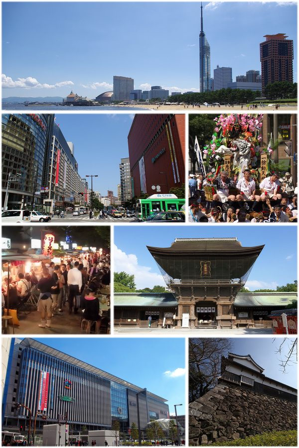
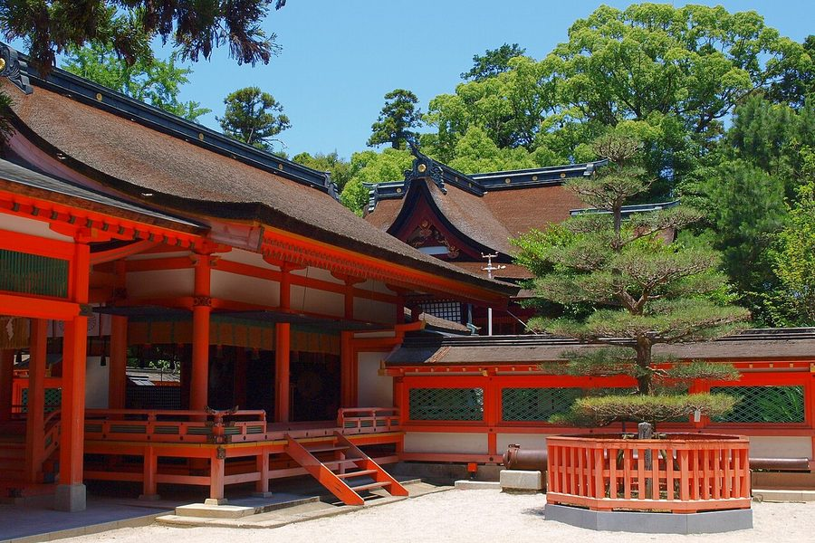

福岡県福岡市のソフトクリーム・ジェラート・かき氷（79件）
寄り道スポット検索アプリ「ヨッテコ」の収録データから、福岡県福岡市のソフトクリーム・ジェラート・かき氷を営業時間・料金つきで一覧にしました（2026年8月時点）。
最も遅くまで開いているのは0cal 福岡城南油山店（翌3:00まで）。
福岡県福岡市はどんなまち？
数字で見る🔍福岡県福岡市
1,620,853人
人口（住民基本台帳・2026年1月1日）
343.47km²
面積
まちの横顔


- 九州最大の都市: 福岡県の県庁所在地で、九州地方最大の人口を有する政令指定都市です。東京23区を除く全国の市の中でも横浜市・大阪市・名古屋市・札幌市に次いで5番目に多い人口（2026年6月1日現在1,677,632人）を擁し、人口増加数・人口増加率はともに政令指定都市の中で首位です（2020年国勢調査）。
- 気候: 冬は北側の玄界灘を流れる暖流・対馬海流の影響で温暖で、冬日は平年2.5日と少なく、東京23区や名古屋市より冬の平均気温が約2.0℃高くなっています。積雪は年1〜2回、最大5cm程度です。一方で夏は熱帯夜が多く、平年の熱帯夜日数は38.7日で、本土では大阪市・神戸市・鹿児島市に次いで多い数字です。
- 都市の交通: 市内には福岡市地下鉄3路線に加え、JR線、西日本鉄道（西鉄）が整備され、路線バスは日本最大のバス事業者である西鉄バスが中心的な役割を担っています。天神や博多を含む都心エリア内は150円の均一運賃です。福岡空港からは国内外へ、博多港からは壱岐・対馬・五島列島や韓国・釜山への航路が運航しています。
寄り道充実度（全国偏差値）
偏差値・順位は、ヨッテコ収録データ（2026年8月時点・26,033件）を市区町村別に集計した施設数の全国分布（1,728市区町村）から毎回算出しています。カードを押すとカテゴリ別の分析に切り替わります。
アイスから見た福岡県福岡市
市内にアイスのお店79件、全国7位でトップ10入り。——アイスの店が集まる、全国有数のまち。
79件
アイスが食べられるお店（全国7位・上位0.4%）
119偏差値
アイス充実度
54%
アイスクリームを出す店の割合（全国39%）
- かき氷を出す店は10%で、全国水準（16%）を下回ります。通年で出せる品が、品ぞろえの軸になっているようです。
- 54%の店がアイスクリームを扱います。全国水準は39%です。ソフトだけでなく、カップやコーンのアイスまで選べる品ぞろえです。
- ジェラートを出す店は10%で、全国水準（14%）を下回ります。ジェラートが目当てなら、行き先を決めてから動くのが良さそうです。
出典: 施設データ=ヨッテコ収録データ（26,033件・2026年8月時点）。偏差値・全国順位・全国水準は全1,728市区町村の分布から毎回算出。 / 人口=総務省「住民基本台帳に基づく人口、人口動態及び世帯数」（2026年1月1日現在） / 面積=国土地理院「全国都道府県市区町村別面積調」（2026年4月1日時点） / 人口・気候・交通=日本語版Wikipedia「福岡市」（https://ja.wikipedia.org/wiki/福岡市、2026年8月21日取得） / まちの解説=同記事より作成（CC BY-SA 4.0） / 写真=Wikimedia Commons（各キャプションに作者・ライセンスを記載）
曜日別の営業施設数
| 月 | 火 | 水 | 木 | 金 | 土 | 日 |
|---|---|---|---|---|---|---|
| 68 | 64 | 60 | 69 | 71 | 69 | 63 |
水曜日が最も休みが多く（各14件が定休）、年中無休は43件です。※営業時間データのある74件で集計
施設一覧
| 施設 | 営業時間 |
|---|---|
| (株)糸島みるくぷらんと 周船寺工場 ソフト | — |
| 0cal アイス | 17:00〜27:00 |
| 0cal 福岡城南油山店 アイス | 17:00〜27:00 |
| 21時にアイス 大名店 アイス | 16:00〜24:00 ※曜日により異なる |
| 21時にアイス 福岡香椎店 アイス 夕食やお酒のあとに食べたくなる、あっさりとしたミルクアイスを提供 | 16:00〜24:00 |
| ABURAYAMA FUKUOKA ソフト 福岡市中心部から車で30分の観光牧場「ABURAYAMA FUKUOKA(旧もーもーらんど油山牧場)」。園内の「森のキオ… | 09:00〜18:00 |
| BOUL' ANGE 福岡大博多ビル店 ソフト | 07:30〜21:00 ※曜日により異なる |
| BREAD＆CAFE ソフトアイス | 08:00〜20:30（日休） |
| BUFFO MIMATSU Specialty Coffee ソフト | 11:00〜23:00 |
| CAFFE OTTO MOMOCHI-hama（カフェオットー モモチハマ） ソフトかき氷 | 10:30〜20:00 |
| COCO GELATO製造所 アイス | — |
| DAIMYO ICE CREAM ソフトアイス | 11:00〜15:00（土・日休） |
| F★Butter(えふばたー) ソフト | 12:00〜22:00（月・火休） |
| GELATERIA SAKURA FUKUOKA ソフトジェラートアイス | 16:00〜23:00（水休） |
| HAKATA ICE はかたあいす ソフトアイス | 17:00〜24:00 |
| Hang out PRINCE アイス | 12:00〜17:00（火休） |
| M'sカフェ ソフト | 08:00〜18:00（土・日休） |
| Ono Lulu 【オノルル】アサイーボウル/クレープ アイス | 17:00〜23:00 ※曜日により異なる |
| SCOOP! ICE CREAM&COFFEE アイス 2025年6月に福岡市早良区・西新エリアにオープンしたクラフトアイス専門店。香料や人工着色料を使わず、九州・山口産の旬の… | 11:00〜17:00（月・火休） |
| VITO西新店 ジェラートアイス | 15:00〜23:00 ※曜日により異なる |
| Wアイスクリームファクトリー W. ICE CREAM FACTORY アイス | 11:00〜17:00 |
| cafeくるりや ソフトアイス | 12:00〜18:00（火・水休） |
| nana’s green tea JR博多シティ店（matcha cafe） ソフト | 10:00〜21:00 |
| pan do mou(パンドムウ) アイス 日本最大のパンの祭典、池袋パン祭りに招待された作品のアイスを提供。 | 10:00〜20:00 |
| soffmore アイス | 15:00〜22:00 ※曜日により異なる |
| sweet night ice 博多店 アイス | 19:00〜25:00 |
| あいすカフェ ソフト | 11:30〜22:00 |
| おいしい氷屋 天神南店 かき氷 1946年創業の九州製氷株式会社が直営するかき氷専門店。ゆっくり丁寧に凍らせた純度99.9%のブランド氷「博多純氷」を使… | 12:00〜18:00（水休） |
| おかしや ソフト | — |
| かしいスクエア ソフト | 00:00〜24:00 |
| こはく堂（kohakudo） かき氷 | 12:00〜18:00（日休） |
| ご馳走アイス アイス | 16:00〜23:00 ※曜日により異なる |
| そふ珈琲 かき氷アイス | 13:00〜18:00（火・水休） |
| ほどほど農園 アイス | — |
| みどりMILK STAND byみどり工場直売所 ソフト みどり工場直売所初の福岡進出店。九州乳業の製品と併売する工場直送ソフトクリームを提供。博多バスターミナル1階に立地 | 08:00〜20:00 |
| もち吉 博多本店 ジェラートアイス | 09:00〜19:00 |
| もち吉 野芥店 ソフト | 10:00〜19:00 |
| ももちアイスクリーム【MOMOCHI ICECREAM】 アイス | 10:00〜13:00 |
| をかし ひつじや ソフト | 10:00〜18:00 |
| エルベ アイス | — |
| オーガニックジェラート GELATO NATURALE ジェラートナトゥラーレ ジェラート 2017年開業のオーガニックジェラート専門店。玉名牧場のグラスフェッドミルクや天然素材100%のクラフトソフトを提供。 | 11:00〜18:00（水・木休） |
| カフェツナグ和白 ソフトアイス | 08:00〜19:00 ※曜日により異なる |
| カフェ＆レストランうふふ 長住店 ジェラート 150種以上のパフェを揃えるカフェ＆レストラン。ジェラート、ふわふわかき氷、うふふクロワッサンソフトも提供 | 07:30〜22:00 ※曜日により異なる |
| カワバタアイススタンド アイス | 11:00〜24:00 ※曜日により異なる |
| ガーデンカフェ Nanの木 ソフトかき氷 緑に囲まれた落ち着いた空間。自家焙煎コーヒーや季節のランチを提供し、ソフトクリームも展開。店内から庭園を眺めながら静かな… | 10:00〜18:00 ※曜日により異なる |
| クラフトソフトクリーム専門店 GELATO NATURALE ジェラートナトゥラーレ ソフトジェラート 2017年開業のオーガニックジェラート専門店。玉名牧場のグラスフェッドミルクや薩南諸島産純黒糖など天然素材100%で、手… | 10:00〜17:00（水・木休） |
| グラッシェ アリス アイス アントルメ・グラスの専門店。ホテル日航福岡製菓製パン料理長が28年間勤務した経験を生かし、生アイスやジェラートを洋菓子風… | 11:00〜18:00（日休） |
| グルテンフリー＆100％植物性スイーツ Soy Stories（vegan＆gluten free） ソフト 全商品グルテンフリー・100%植物性素材のSOYスイーツを提供。濃厚無添加豆乳のワッフル純豆乳ソフトや米粉ジェラート、石… | 11:00〜22:00 |
| コバコレモン工房 かき氷アイス 国産・無添加のレモンペーストとピールを製造する福岡の工房。かき氷やアイスを提供 | 10:30〜18:00 ※曜日により異なる |
| サイラー 友丘店 ソフトアイス 日本ではなじみの薄いオーストリアパンを扱うサイラー。アイスクリームケースには12種類のフルーティなアイスをご用意し、ブル… | 09:00〜19:00 |
| ジェラートカフェ茶茶 ジェラート | 10:00〜18:00（火・水休） |
| ストングカフェ ソフトアイス 自家焙煎スペシャルティコーヒーが楽しめるカフェ。フランス伝統製法のルヴァン種パンをオールスクラッチで製造。ソフトクリーム… | 09:00〜17:00 |
| ソフトクリーム専門店 BETUBARAGA(ベツバラーガ) アイス | 13:00〜17:30 ※曜日により異なる |
| チョコレートショップ 本店 ソフト | 10:00〜19:00（火休） |
| トリカイサン ソフトアイス | 13:00〜19:00 |
| ビアンコ ブランコ ソフト | 12:00〜20:00 ※曜日により異なる |
| ブルーシール ソフトアイス アメリカ生まれ沖縄育ちのアイス専門店。ソフトクリームを提供 | 09:30〜22:30 |
| ブルージャム アイス 2013年福岡・室見川沿いでオープンした地産地消をコンセプトとした自然派ベーカリーカフェ。自家製パンに加え、アイスクリー… | 09:00〜18:00 |
| ミツイモタイム 薬院店 ソフト | 11:00〜19:00 |
| 九重珈琲 長住店 ソフト 大分県九重町の自然が育んだ恵みを感じられる自然派カフェレストラン。自家製シフォンケーキと共にソフトクリームを提供。 | 10:30〜21:00 |
| 北キツネの大好物 和白店 ソフトアイス | 12:00〜21:30 ※曜日により異なる |
| 北キツネの大好物 大名店 ソフトアイス | 15:00〜25:00 |
| 北キツネの大好物 福岡タワー店 ソフト | 12:00〜19:30（水休） |
| 北海道うまいもの館 ららぽーと福岡 ソフト ららぽーと福岡1階の北海道うまいもの館。厳選された北海道の食材を用いたソフトクリームを提供 | 10:00〜21:00 |
| 博多ひいらぎ ソフトかき氷アイス | 10:00〜18:00 |
| 原口園 扶桑庵 アイス 昭和11年創業の茶問屋。八女玉露抹茶を使用した抹茶シルクアイスを販売。博多駅名店街マイングに立地 | 09:00〜21:00 |
| 吉積ぶどう園 ソフト 福岡市内のぶどう園。自家製のぶどうを使ったソフトクリームを提供。ソフトクリームやかき氷の販売は、お盆明けを予定している。 | 09:30〜16:00 |
| 壺焼き芋 N.sweet ソフトかき氷 | 12:00〜19:00 ※曜日により異なる |
| 大名ソフトクリーム 大名店 ソフトアイス 福岡発のソフトクリーム専門店DAIMYO SOFTCREAMの本店(大名店)。イタリア製ソフトクリームマシンで抽出する濃… | 11:00〜22:00 |
| 大名ソフトクリーム 福岡パルコ店 アイス | 11:00〜21:00 |
| 抹茶カフェ HACHI 姪浜本店 アイス 抹茶をテーマにしたカフェ。抹茶のソフトクリームを提供 | 11:00〜18:00 ※曜日により異なる |
| 最中皮工場直売のお店 『もなかの種』 ソフト 最中皮を製造する直売店。最中を砕いたクラッシュ最中や、キャラメル最中を使ったソフトクリームを提供 | 12:00〜16:00 |
| 田頭茶舗＆ゆい庵 福岡赤坂店 ソフト | 10:30〜18:30 |
| 町家かふぇ かまくら ソフトアイス 国内産の本わらび粉を使ったわらび餅と、60種類以上の甘味を提供。古民家カフェ風の和の空間で、ソフトクリームを含むお食事や… | 10:00〜21:00（火休） |
| 祝うてサンド ららぽーと福岡店 ソフトアイス 三井ショッピングパークららぽーと福岡モール棟1Fに立つ祝うてサンド専門店。店内でソフトクリームを販売 | 10:00〜21:00 |
| 糸島茶房 ジェラート パンケーキや自家製麺にこだわる『白金茶房』の姉妹店として二見ヶ浦に誕生。ジェラートを提供し、美しい海岸を眺めながら楽しめ… | 11:00〜18:00 ※曜日により異なる |
| 芋屋金次郎 福岡店 ソフト 高知県雪ヶ峰牧場のジャージー牛乳とムラサキ芋を使用したコク深いソフトクリームを提供。九州ではなじみの薄い土佐の親しみ深い… | 10:00〜19:00 |
| 菓匠茶屋 イオン原店 ソフト 広島を拠点に山口、九州、四国に展開するお茶屋。国産お抹茶を使ったソフトクリームを提供 | 10:00〜21:00 |
| ３３ ＣＡＦÉ ＧＲＥＥＮ ソフト アサヒ緑健直営のはじめてのカフェ。緑効青汁を販売し、ソフトクリームも提供。JR博多駅筑紫口より徒歩7分。 | 08:00〜19:30 ※曜日により異なる |
現在地から近い順に探すなら、地図アプリ「ヨッテコ」
全国26,000件の温泉・道の駅・アイスのお店を登録不要で検索。到着時刻に営業しているかの目安も表示します。